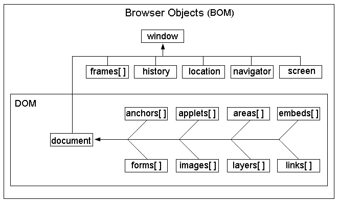

JavaScript基础分为三部分：
ECMAScript：JavaScript的语法标准。包括变量、表达式、运算符、函数、if语句、for语句等。
DOM：文档对象模型，操作网页上的元素的API。比如让盒子移动、变色、轮播图等。
BOM：浏览器对象模型，操作浏览器部分功能的API。比如让浏览器自动滚动。
BOM：Browser Object Model，浏览器对象模型。
BOM的结构图:

从上图也可以看出：
window对象是BOM的顶层(核心)对象，所有对象都是通过它延伸出来的，也可以称为window的子对象。
DOM是BOM的一部分。
window对象：
window对象是JavaScript中的顶级对象。
全局变量、自定义函数也是window对象的属性和方法。
window对象下的属性和方法调用时，可以省略window。
下面讲一下 BOM 的常见内置方法和内置对象。
比如说，alert(1)是window.alert(1)的简写，因为它是window的子方法。
系统对话框有三种：
alert(); //不同浏览器中的外观是不一样的
confirm(); //兼容不好
prompt(); //不推荐使用window.open(url,target)参数解释：
url：要打开的地址。
target：新窗口的位置。可以是：
_blank、_self、_parent父框架。
close();<!DOCTYPE html>
<html>
<head>
<meta charset="UTF-8">
<title></title>
</head>
<body>
<!--行间的js中的open() window不能省略-->
<button onclick="window.open('https://i-beta.cnblogs.com')">爱编程的小灰灰</button>
<button>打开百度</button>
<button onclick="window.close()">关闭</button>
<button>关闭</button>
</body>
<script type="text/javascript">
var oBtn = document.getElementsByTagName('button')[1];
var closeBtn = document.getElementsByTagName('button')[3];
oBtn.onclick = function(){
//open('https://www.baidu.com')
//打开空白页面
open('about:blank',"_self")
}
closeBtn.onclick = function(){
if(confirm("是否关闭？")){
close();
}
}
</script>
</html>window.location可以简写成location。location相当于浏览器地址栏，可以将url解析成独立的片段。
href：跳转
hash 返回url中#后面的内容，包含#
host 主机名，包括端口
hostname 主机名
pathname url中的路径部分
protocol 协议 一般是http、https
search 查询字符串
location.href属性举例：
举例1：点击盒子时，进行跳转。
<body>
<div>smyhvae</div>
<script>
var div = document.getElementsByTagName("div")[0];
div.onclick = function () {
location.href = "http://www.baidu.com"; //点击div时，跳转到指定链接
// window.open("http://www.baidu.com","_blank"); //方式二
}
</script>
</body>举例2：5秒后自动跳转到百度。
有时候，当我们访问一个不存在的网页时，会提示5秒后自动跳转到指定页面，此时就可以用到location。举例：
<script>
setTimeout(function () {
location.href = "http://www.baidu.com";
}, 5000);
</script>location.reload()：重新加载
setTimeout(function(){
//3秒之后让网页整个刷新
window.location.reload();
},3000)window.navigator 的一些属性可以获取客户端的一些信息。
userAgent：系统，浏览器)
platform：浏览器支持的系统，win/mac/linux
例子：
console.log(navigator.userAgent);
console.log(navigator.platform);1、后退：
history.back()
history.go(-1)：0是刷新
2、前进：
history.forward()
history.go(1)
用的不多。因为浏览器中已经自带了这些功能的按钮。